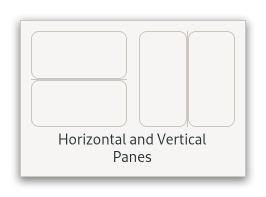

Gtk.Paned¶
Example¶

- Subclasses:
None
Methods¶
- Inherited:
Gtk.Widget (183), GObject.Object (37), Gtk.Accessible (18), Gtk.Buildable (1), Gtk.Orientable (2)
- Structs:
class |
|
|
|
|
|
|
|
|
|
|
|
|
|
|
|
|
|
|
Virtual Methods¶
Properties¶
- Inherited:
Name |
Type |
Flags |
Short Description |
|---|---|---|---|
r/w/en |
|||
r/en |
|||
r/en |
|||
r/w/en |
|||
r/w/en |
|||
r/w/en |
|||
r/w/en |
|||
r/w/en |
|||
r/w/en |
|||
r/w/en |
|||
r/w/en |
Signals¶
- Inherited:
Name |
Short Description |
|---|---|
Emitted to accept the current position of the handle when moving it using key bindings. |
|
Emitted to cancel moving the position of the handle using key bindings. |
|
Emitted to cycle the focus between the children of the paned. |
|
Emitted to cycle whether the paned should grab focus to allow the user to change position of the handle by using key bindings. |
|
Emitted to move the handle with key bindings. |
|
Emitted to accept the current position of the handle and then move focus to the next widget in the focus chain. |
Fields¶
- Inherited:
Class Details¶
- class Gtk.Paned(**kwargs)¶
- Bases:
- Abstract:
No
Arranges its children in two panes, horizontally or vertically.
<picture> <source srcset=”panes-dark.png” media=”(prefers-color-scheme: dark)”> <img alt=”An example
Gtk.Paned" src=”panes.png”> </picture>The division between the two panes is adjustable by the user by dragging a handle.
Child widgets are added to the panes of the widget with [method`Gtk`.Paned.set_start_child] and [method`Gtk`.Paned.set_end_child]. The division between the two children is set by default from the size requests of the children, but it can be adjusted by the user.
A paned widget draws a separator between the two child widgets and a small handle that the user can drag to adjust the division. It does not draw any relief around the children or around the separator. (The space in which the separator is called the gutter.) Often, it is useful to put each child inside a [class`Gtk`.Frame] so that the gutter appears as a ridge. No separator is drawn if one of the children is missing.
Each child has two options that can be set, “resize” and “shrink”. If “resize” is true then, when the
GtkPanedis resized, that child will expand or shrink along with the paned widget. If “shrink” is true, then that child can be made smaller than its requisition by the user. Setting “shrink” to false allows the application to set a minimum size. If “resize” is false for both children, then this is treated as if “resize” is true for both children.The application can set the position of the slider as if it were set by the user, by calling [method`Gtk`.Paned.set_position].
- Shortcuts and Gestures
The following signals have default keybindings:
[signal`Gtk`.Paned::accept-position]
[signal`Gtk`.Paned::cancel-position]
[signal`Gtk`.Paned::cycle-child-focus]
[signal`Gtk`.Paned::cycle-handle-focus]
[signal`Gtk`.Paned::move-handle]
[signal`Gtk`.Paned::toggle-handle-focus]
- CSS nodes
`` paned ├── <child> ├── separator[.wide] ╰── <child> ``
GtkPanedhas a main CSS node with name paned, and a subnode for the separator with name separator. The subnode gets a .wide style class when the paned is supposed to be wide.In horizontal orientation, the nodes are arranged based on the text direction, so in left-to-right mode,
:first-childwill select the leftmost child, while it will select the rightmost child in RTL layouts.- Creating a paned widget with minimum sizes.
```c
Gtk.Widget*hpaned =Gtk.Paned.new(Gtk.Orientation.HORIZONTAL);Gtk.Widget*frame1 =Gtk.Frame.new(None);Gtk.Widget*frame2 =Gtk.Frame.new(None);Gtk.Widget.set_size_request(hpaned, 200, -1);Gtk.Paned.set_start_child(GTK_PANED (hpaned), frame1);Gtk.Paned.set_resize_start_child(GTK_PANED (hpaned),True);Gtk.Paned.set_shrink_start_child(GTK_PANED (hpaned),False);Gtk.Widget.set_size_request(frame1, 50, -1);Gtk.Paned.set_end_child(GTK_PANED (hpaned), frame2);Gtk.Paned.set_resize_end_child(GTK_PANED (hpaned),False);Gtk.Paned.set_shrink_end_child(GTK_PANED (hpaned),False);Gtk.Widget.set_size_request(frame2, 50, -1); ```- classmethod new(orientation)[source]¶
- Parameters:
orientation (
Gtk.Orientation) – the paned’s orientation.- Returns:
the newly created paned widget
- Return type:
Creates a new
GtkPanedwidget.
- get_end_child()[source]¶
- Returns:
the end child widget
- Return type:
Gtk.WidgetorNone
Retrieves the end child of the given
GtkPaned.
- get_position()[source]¶
- Returns:
the position of the divider, in pixels
- Return type:
Obtains the position of the divider between the two panes.
- get_resize_end_child()[source]¶
- Returns:
true if the end child is resizable
- Return type:
Returns whether the [property`Gtk`.Paned:end-child] can be resized.
- get_resize_start_child()[source]¶
- Returns:
true if the start child is resizable
- Return type:
Returns whether the [property`Gtk`.Paned:start-child] can be resized.
- get_shrink_end_child()[source]¶
- Returns:
true if the end child is shrinkable
- Return type:
Returns whether the [property`Gtk`.Paned:end-child] can shrink.
- get_shrink_start_child()[source]¶
- Returns:
true if the start child is shrinkable
- Return type:
Returns whether the [property`Gtk`.Paned:start-child] can shrink.
- get_start_child()[source]¶
- Returns:
the start child widget
- Return type:
Gtk.WidgetorNone
Retrieves the start child of the given
GtkPaned.
- set_end_child(child)[source]¶
- Parameters:
child (
Gtk.WidgetorNone) – the widget to add
Sets the end child of self to child.
If child is
NULL, the existing child will be removed.
- set_position(position)[source]¶
- Parameters:
position (
int) – pixel position of divider, a negative value means that the position is unset
Sets the position of the divider between the two panes.
- set_resize_end_child(resize)[source]¶
- Parameters:
resize (
bool) – true to let the end child be resized
Sets whether the [property`Gtk`.Paned:end-child] can be resized.
- set_resize_start_child(resize)[source]¶
- Parameters:
resize (
bool) – true to let the start child be resized
Sets whether the [property`Gtk`.Paned:start-child] can be resized.
- set_shrink_end_child(resize)[source]¶
- Parameters:
resize (
bool) – true to let the end child be shrunk
Sets whether the [property`Gtk`.Paned:end-child] can shrink.
- set_shrink_start_child(resize)[source]¶
- Parameters:
resize (
bool) – true to let the start child be shrunk
Sets whether the [property`Gtk`.Paned:start-child] can shrink.
- set_start_child(child)[source]¶
- Parameters:
child (
Gtk.WidgetorNone) – the widget to add
Sets the start child of self to child.
If child is
NULL, the existing child will be removed.
Signal Details¶
- Gtk.Paned.signals.accept_position(paned)¶
- Signal Name:
accept-position- Flags:
- Parameters:
paned (
Gtk.Paned) – The object which received the signal- Returns:
whether the position was accepted
- Return type:
Emitted to accept the current position of the handle when moving it using key bindings.
This is a keybinding signal.
The default binding for this signal is <kbd>Return</kbd> or <kbd>Space</kbd>.
- Gtk.Paned.signals.cancel_position(paned)¶
- Signal Name:
cancel-position- Flags:
- Parameters:
paned (
Gtk.Paned) – The object which received the signal- Returns:
whether the position was canceled
- Return type:
Emitted to cancel moving the position of the handle using key bindings.
The position of the handle will be reset to the value prior to moving it.
This is a keybinding signal.
The default binding for this signal is <kbd>Escape</kbd>.
- Gtk.Paned.signals.cycle_child_focus(paned, reversed)¶
- Signal Name:
cycle-child-focus- Flags:
- Parameters:
- Returns:
whether the behavior was cycled
- Return type:
Emitted to cycle the focus between the children of the paned.
This is a keybinding signal.
The default binding is <kbd>F6</kbd>.
- Gtk.Paned.signals.cycle_handle_focus(paned, reversed)¶
- Signal Name:
cycle-handle-focus- Flags:
- Parameters:
- Returns:
whether the behavior was cycled
- Return type:
Emitted to cycle whether the paned should grab focus to allow the user to change position of the handle by using key bindings.
This is a keybinding signal.
The default binding for this signal is <kbd>F8</kbd>.
- Gtk.Paned.signals.move_handle(paned, scroll_type)¶
- Signal Name:
move-handle- Flags:
- Parameters:
paned (
Gtk.Paned) – The object which received the signalscroll_type (
Gtk.ScrollType) – aGtkScrollType
- Returns:
whether the handle was moved
- Return type:
Emitted to move the handle with key bindings.
This is a keybinding signal.
The default bindings for this signal are <kbd>Ctrl</kbd>+<kbd>←</kbd>, <kbd>←</kbd>, <kbd>Ctrl</kbd>+<kbd>→</kbd>, <kbd>→</kbd>, <kbd>Ctrl</kbd>+<kbd>↑</kbd>, <kbd>↑</kbd>, <kbd>Ctrl</kbd>+<kbd>↓</kbd>, <kbd>↓</kbd>, <kbd>PgUp</kbd>, <kbd>PgDn</kbd>, <kbd>Home</kbd>, <kbd>End</kbd>.
- Gtk.Paned.signals.toggle_handle_focus(paned)¶
- Signal Name:
toggle-handle-focus- Flags:
- Parameters:
paned (
Gtk.Paned) – The object which received the signal- Returns:
whether handle focus was toggled
- Return type:
Emitted to accept the current position of the handle and then move focus to the next widget in the focus chain.
This is a keybinding signal.
The default binding is <kbd>Tab</kbd>.
Property Details¶
- Gtk.Paned.props.end_child¶
- Name:
end-child- Type:
- Default Value:
- Flags:
The second child.
- Gtk.Paned.props.max_position¶
- Name:
max-position- Type:
- Default Value:
2147483647- Flags:
The largest possible value for the [property`Gtk`.Paned:position] property.
This property is derived from the size and shrinkability of the widget’s children.
- Gtk.Paned.props.min_position¶
- Name:
min-position- Type:
- Default Value:
0- Flags:
The smallest possible value for the [property`Gtk`.Paned:position] property.
This property is derived from the size and shrinkability of the widget’s children.
- Gtk.Paned.props.position¶
- Name:
position- Type:
- Default Value:
0- Flags:
Position of the separator in pixels, from the left/top.
- Gtk.Paned.props.position_set¶
- Name:
position-set- Type:
- Default Value:
- Flags:
Whether the [property`Gtk`.Paned:position] property has been set.
- Gtk.Paned.props.resize_end_child¶
- Name:
resize-end-child- Type:
- Default Value:
- Flags:
Determines whether the second child expands and shrinks along with the paned widget.
- Gtk.Paned.props.resize_start_child¶
- Name:
resize-start-child- Type:
- Default Value:
- Flags:
Determines whether the first child expands and shrinks along with the paned widget.
- Gtk.Paned.props.shrink_end_child¶
- Name:
shrink-end-child- Type:
- Default Value:
- Flags:
Determines whether the second child can be made smaller than its requisition.
- Gtk.Paned.props.shrink_start_child¶
- Name:
shrink-start-child- Type:
- Default Value:
- Flags:
Determines whether the first child can be made smaller than its requisition.
- Gtk.Paned.props.start_child¶
- Name:
start-child- Type:
- Default Value:
- Flags:
The first child.
- Gtk.Paned.props.wide_handle¶
- Name:
wide-handle- Type:
- Default Value:
- Flags:
Whether the
GtkPanedshould provide a stronger visual separation.For example, this could be set when a paned contains two [class`Gtk`.Notebook]s, whose tab rows would otherwise merge visually.